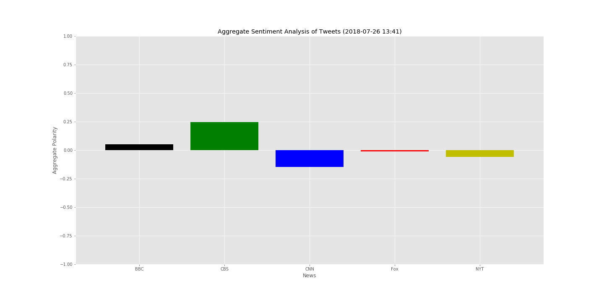

Analysis of Various News Sources on Twitter
This project utilized Python libraries, Twitter API, and VaderSentiment to analyze BBC, CNN, Fox, NYT, and CBS Twitter accounts. Graphs produced using Matplotlib.
 Description: Scatterplot
Description: Scatterplot

Description: Aggregate Bar
Description: Aggregate bars skewed by axis